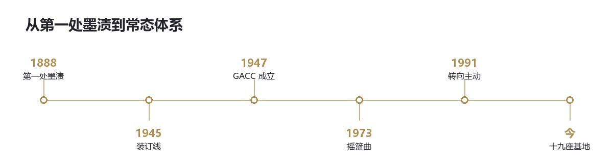

总览 · 沿革
沿革
从第一扇门打开，到制度化的收敛

一、一八八八，第一处墨渍
1888 年，████山脉深处，一支跨国地质勘探队失踪。
搜救队找到营地时，帐篷完好，炉子里还有余温，日记停在同一天，最后一行写着「岩层在唱歌」。二十七个人，一个也没找到。帐篷内壁长满新鲜苔藓，排成复杂的分形图案——一种当时地球上不存在的数学语言。山下的村子在那年冬天集体梦游，用早已失传的方言交谈，说的是同一件事：梦里有另一片天。
此事被各国列为机密。但类似的、无法解释的事件，开始在全球零星爆发。
二、之后二十年
1895 年 一批文物在博物馆午夜同时发出共鸣。三名守卫在监控中「像素化」消失，现场只留下灼烧在地板上的、不明的立体符号。
1901 年 雾霾中浮现持续三小时的「幽灵城市」，目击者超过两千人。建筑由发光晶体构成，街上有光影走动。那三小时里，大本钟的钟声是倒着走的。
1910 年 某条江的一段水域连续三十天呈现彩虹色油膜。触碰过水体的船只和鱼群发生随机的时间跳跃——有的锈蚀成废铁，有的变回崭新的木料。
各国政府起初把这些当作孤立的灵异现象，或者某国的新式武器试验。他们用传统情报手段压制、掩盖、互相猜忌。直到一批顶尖的物理学家、神秘学者和少数有远见的政治家，开始把全世界的报告摊在同一张桌子上。
其中有两个人：埃莉诺·斯特林博士（物理学与形而上学教授），和亚历山大·「灰狐」·沃尔科夫（退役情报将军）。
他们从这些互不相干的事故里，拼出了一个让人窒息的结论：
我们的世界，像是筛子正在渗漏。某种更深层的、不兼容的「规则」，正通过未知的裂隙，缓慢而坚定地渗入我们的宇宙。
三、一九四五年，装订线
洛斯阿拉莫斯，1945 年。第一颗原子弹试爆。爆炸释放的能量短暂撕裂了本地维度的「膜」。
监控设备记录到爆炸中心出现 0.3 秒的无序，以及一个无法解析的、非人类语言的广播信号，随后湮灭。
主导研究的某位博士在日记里隐晦地写道：
我们不仅制造出了历史上最强的杀伤性武器，似乎还惊醒了一些东西。
四、一九四七年，瑞士密室
1947 年，在广播信号与全球异常事件激增的双重压力下，由斯特林博士与「灰狐」沃尔科夫牵头，联合了美国「星门」计划的幸存科学家、苏联「特异现象研究局」的核心成员、英国「皇家秘学学会」的激进派，以及从纳粹遗产中抢救出来的、尚有良知的研究者，在瑞士一家中立银行的密室中，召开了为期两周的绝密会议。
会议没有国旗，只有共识：必须成立一个超越国家、独立运作、共享资源与情报的全球性实体，专职应对异常威胁。它的目标不是为国家利益服务，而是为人类的存续服务。
GACC 由此成立。
GACC 宣称其运作「不受各个主要国家政府的司法管辖权、授权和委托的干扰」，这是它超国家、独立实体地位的由来。但这并不意味着它完全脱离现实。
主要国家的最高决策层——国家元首、情报机构首脑、军方高层中的极少数人——明确知晓 GACC 的存在与使命。他们理解异常对全球安全的威胁，并默许或暗中支持 GACC 在其领土上的部分活动，以换取保护。
五、一九七三，摇篮曲
1973 年，南太平洋某无人岛。一个基于早期异常理论的联合实验场发生事故。
实验没有召唤出神。它意外在岛上打开了一个稳定的、通往一片海的裂隙——那片海平静、毫无波动，连水声都不存在。它后来被定名为 K-7 维度。这片海的规则只有一条：一切趋向于无意义的随机解构。
裂隙在 72 小时内扩大。岛屿本身开始消失，像融化一样，随机组合成无功能的废料。时间线碎裂，岛上同时存在恐龙时代的幻影和未来的建筑残骸。最可怕的是，一种「逻辑崩解」效应开始通过无线电波微弱扩散，影响附近船只和飞机的导航。
GACC 第一次集结了全部可用力量。代价是三艘研究船、一架战略轰炸机，和 147 名最精锐的早期行动人员。
裂隙被一种基于反向共鸣原理的临时装置「缝合」。岛屿已从现实中被彻底擦除，海图上只留下一片完美的、不符合周围洋流的水文空白。
在血的教训之后，他们明白：松散的合作无法应对高烈度异常危机。需要常设的、高度专业化的、有充足预算和独立行动权的实体部门。
六、架构在反思中成型
- 情报局（摩涅莫绪涅之眼） 前身因情报延误和误判被严厉问责后重组，确立了全域监控的核心地位。
- 科研部（图特密藏所） 前身因实验冒进被批判，确立了「理论先行、严格伦理审查」的新原则。这个部门在 1973 年之后被撤销，只剩一块还挂着的牌子。
- 机动特遣队 必要性被确认，专业队伍开始组建，以应对不同类型的异常。
- 安全部门 理念被强化，强调总部内部防御，与失控初期的「坚固防线」。
- 伦理道德委员会 被赋予更大权力，直接对最高决策层负责，有权叫停任何被视为高风险或不人道的行动与研究。
同期确立的还有稳态侵蚀等级——以 0 到 5 级衡量一处异常已经改写了多少世界，而不是衡量它有多难关住。
七、冷战之后，异化
随着冷战结束和全球信息网络兴起，GACC 的规模、权力和技术呈指数级增长，它的本质也在异化。
技术飞跃
他们从被动安抚，发展到主动编辑。
- 认知滤网 在互联网和通讯网络的关键节点植入，自动弱化或扭曲涉及异常的信息。
- 记忆编辑协议 针对目击者或受影响者，从药物诱导到精密的神经接口覆写。
- 稳定锚 在异常高发区或重要城市地下部署，像钉子一样「加固」本地。
从多点到一个点
1973 年之后，GACC 陆续关闭了全部海外基地。
理由写在 1981 年那份只有三页的评估报告里：分散的基地各自需要稳定锚，而每一座稳定锚都会把周围变成一块「更硬」的现实——硬到足以让别的东西注意到这里。
基地少了，观察站多了。今天 GACC 在地图上只有一处基地，和四十七个针眼。
内部派系分化
- 捍卫者（正统派） 坚持索恩博士最初的必要之恶理念，视 GACC 为人类文明的免疫系统——痛苦，但必需。目标是维持现状，直至人类进化到能承受更多真相。
- 升华主义者 认为维持现状既是保护也是枷锁。主张有限度地、可控地泄露异常知识或技术，促进人类进化，最终主动揭开，让人类成为真相中的文明。被视为激进危险分子。
- 终末派 最悲观也最冷酷的一派。认为崩坏不可逆转，GACC 的职责是管理「有序衰退」。他们秘密策划文明归档和选择性幸存者计划，必要时可执行大规模认知重置，牺牲大部分人以保存文明火种。
外部威胁
- 真视会 由部分升华主义者叛逃成立，致力于主动破坏现状，认为唯有在真相的烈火中人类才能涅槃重生。是 GACC 最危险的敌人。
- 遗忘者 在一次大规模认知重置中产生的意外副产品——一群存在被削弱、但未完全消失的人。他们生活在现实边缘，能被部分人模糊感知，致力于向 GACC 复仇，夺回自己被剥夺的存在感。
八、会训
我们守护谎言，以延续真实。
我们擦拭血迹，以维持洁净。
我们背负罪孽，以交换太阳。
认知即现实，而现实由我们塑造——
直至我们塑造不动的那天，或我们成为需要被擦拭的血迹。